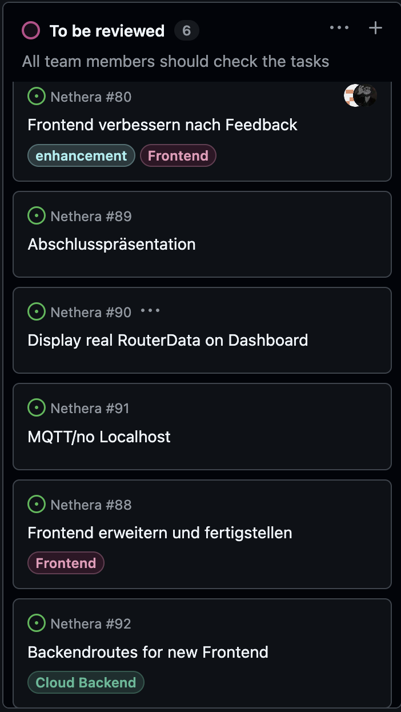

Nethera
Intuitive Cloud-Management-Plattform für OpenWRT-Heimnetzwerke
Abschlusspräsentation 2025/26
4CHITM · HTL Leonding
Tobias Huemer · Deniz Bernecker · Nico Hofer · Manuel Freihaut · Moritz Kapeller
Letzter Sprint: Erreichte Meilensteine
Sprint 10: Letzte Implementierungsphase und Projektabschluss

Das Projektteam
Rollenverteilung und Workload innerhalb der Projektgruppe
5 Entwickler
Agiles Arbeiten (Scrum)
Effiziente Lastverteilung
HTL Leonding 2025/26
Projektbeschreibung
Nethera ist eine Softwarelösung, die die Konfiguration von Heimnetzwerk-Routern für technisch nicht affine Nutzer radikal vereinfacht.
📱 Das Gesamtsystem
- Moderne Web-Applikation und native mobile App zur intuitiven Steuerung.
- Sichere Kommunikation über ein zentrales Cloud-Backend (Quarkus).
- Zielgerichtete Hardware-Umsetzung direkt auf einem OpenWRT-Router.
🎯 Die Kerninnovation
- Abstraktion komplexer Netzwerkfunktionen (Werbeblocker, Inhaltsfilter).
- Bandbreiten-Priorisierung über eine verständliche Oberfläche.
- Ein funktionaler Prototyp bildet die gesamte Kette bis zur Hardware ab.
Ist-Zustand & Problemstellung
🔴 Die Ausgangslage heute
- Konfigurationsoberflächen (OpenWRT) sind primär für IT-Fachpersonal gestaltet.
- Komplexe Menüs, technischer Jargon und unübersichtliche UIs schrecken ab.
- Provider-Lösungen bieten eingeschränkte Features oder komplizierten Remote-Zugriff.
🟢 Das Kernproblem
- Hohe Einstiegshürde und Angst vor Internet-Ausfällen durch Fehlkonfigurationen.
- Es mangelt an einer einfachen Lösung, Regeln schnell auf Geräte anzuwenden.
- Keine „Plug-and-Play“-Erfahrung für fortgeschrittene Heimnetz-Features.
Das Soll-Konzept
Die Zielsetzung für das neue System:
🛡️ Abstraktion & UX
- Der 5-Klick-Ansatz: Aktivierung zentraler Features (Inhaltsfilter, Priorisierung) in unter 5 Klicks.
- Verständlichkeit: Einsatz einfacher Sprache, visueller Icons und vordefinierter Presets zur Vermittlung von Sicherheit.
⚡ Optimierung & Fernsteuerung
- Laien-Bedienung: Individuelle Netzwerkoptimierung komplett ohne Vorkenntnisse.
- Cloud-Management: Sichere Verwaltung von unterwegs, ohne jemals mit CLI oder Protokollen in Berührung zu kommen.
Zielgruppen & Nutzungsszenarien
👥 Die primären Benutzer
- Eltern: Suchen einfache Wege zur Filterung jugendgefährdender Inhalte.
- Technisch nicht Affine: Möchten Adblocker ohne zeitaufwändige Einarbeitung.
- Beschäftigte Nutzer: Bevorzugen schnelle Steuerung via Smartphone-App.
- Interessierte Anwender: Legen Wert auf exzellentes Design und Zeitersparnis.
🎬 Szenarien aus der Praxis
- Kindersicherung: Gruppe „Kinder“ wählen → Preset „FSK18-Filter“ aktivieren → Inhalte sofort blockiert.
- Werbeblocker: Menü „Sicherheit“ aufrufen → Netzwerkweiten Adblocker mit einem Schieberegler einschalten.
- Home-Office: Arbeits-Laptop per App „Priorität“ geben → Video-Streams bleiben trotz Downloads stabil.
Systemarchitektur & Datenfluss
Die technologische Kette vom Client bis zum Betriebssystem
SPA Frontend / Mobile App
→
Sichere Cloud-Anbindung
→
Quarkus 3 Cloud-Backend
→
Relational Cache (PostgreSQL)
→
OpenWRT Router Hardware
Abgrenzung (Nicht-Ziele): Nethera ist kein Ersatz für professionelle Enterprise-Tools und entwickelt keine eigene Router-Hardware. Es findet keine manuelle Low-Level-Konfiguration (IP-Routing) und aus Datenschutzgründen keine Inhaltsüberwachung (Deep Packet Inspection) statt.
Technologien & Schnittstellen
Entkoppelte Entwicklung durch vertragsbasierte OpenSpec-Spezifikationen
📡 REST-API (Backend ↔ Frontend)
- Sicheres Benutzer-Login: Cloud-basierte Authentifizierung schützt jeden REST-Endpoint ab.
- Verbindungsabbruch-Sicherung: Transaktionssichere API-Abwicklung, um instabile Routerzustände zu verhindern.
🔒 OS-Ebene (Backend ↔ OpenWRT)
- MUSS-Kriterium SSH: Verschlüsselte Kommando-Injektion zur direkten Steuerung von OpenWRT.
- Inhaltsfilterung: Externe Repositories (z.B. OISD) speisen die DNS-basierten Blocklisten des Routers.
Priorisierung der Anforderungen
🎯 MUSS-Anforderungen
- Hardware-Steuerung: SSH-Kommunikation zwischen Backend und OpenWRT-Router.
- Management-UI: Web-Interface für One-Click Adblocker und Inhaltsfilter.
- Geräte-Verwaltung: Zuverlässige Geräteerkennung und Gruppenzuweisung.
- Security: Sicheres Benutzer-Login im Cloud-Backend.
💡 SOLL- / KANN-Ebene
- SOLL: Native Mobile App (oder Progressive Web App) für mobile Endgeräte.
- SOLL: Vordefinierte Presets (z.B. „Gaming-Modus“, „Kindersicherung“).
- SOLL: Echtzeit-Statusanzeige verbundener Geräte.
- KANN: Statistiken über geblockte Tracking-Anfragen & Gast-WLAN per QR-Code.
Quality & Systemdaten
🎯 Qualitäts- & Usability-Vorgaben
- Einfachheit: Keine Funktion liegt tiefer als 3-4 Navigationsebenen. Begriffe wie QoS, CIDR oder DNS-Lease sind komplett ausgeblendet.
- Geschwindigkeit: UI-Änderungen werden innerhalb weniger Sekunden auf der Hardware aktiv.
- Design: Modernes "Dark Mode"-fähiges Interface mit prägnanter Ikonografie.
📊 Verwaltete Datenobjekte
- Nutzerdaten: E-Mail, verschlüsseltes Passwort, Account-Status (DSGVO-konform).
- Netzwerkdaten: MAC-Adressen der Endgeräte, Gerätenamen, Gruppen-Zugehörigkeiten.
- Konfigurationsdaten: Status der Filterlisten, Priorisierungs-Flags.
Projektverlauf & Entwicklungsdynamik
Git-Commits über den Entwicklungszeitraum (Peak: 34 Commits/Monat)
Okt '25
9
Projekt-Scoping & Spezifikationen
Nov '25
34
UI-Prototyping & Quarkus-Setup
Dez '25
11
Architektur-Review & Refactoring
Jan '26
25
Keycloak OIDC Integration & DB-Setup
Feb '26
16
REST Endpoints & Device-Management
Mär '26
30
UX-Redesign & Responsive Layouts
Apr '26
14
DNS-Blocklists & Filter-Injektion
Mai '26
34
Router-Sync Core & Integrationstest
Jun '26
8
Deployment, Dokumentation & Handover
🔮 Live-Demo
Präsentation des lauffähigen Systems
Einblick in das Admin-Dashboard, intuitive Gerätegruppen-Zuweisung und Live-DNS-Sperren.
Projektergebnis in Zahlen
Projektgruppe: Tobias Huemer · Deniz Bernecker · Nico Hofer · Manuel Freihaut · Moritz Kapeller
Ausgezeichnete, homogene Lastverteilung und agile Zusammenarbeit über alle Sprints hinweg.
Erfolgskriterien & Sonderfälle
✅ Erreichte Erfolgskriterien
- Usability-Erfolg: Ein fachfremder Testnutzer kann einen Filter in unter 60 Sekunden aktivieren.
- Stabilität: Die SSH-Kommunikation zwischen Quarkus-Backend und Router funktioniert im Dauertest stabil.
- Persistenz: Die vorgenommenen Einstellungen bleiben nach einem Stromausfall oder Reboot erhalten.
⚠️ Abgesicherte Fehlerfälle
- Router Offline: Die App zeigt sofort einen verständlichen Warnhinweis im Interface.
- Fehlerhafte Filterliste: Bei Problemen mit einer externen Quelle fällt das System auf sichere Standardwerte zurück.
- Offene Fragen geklärt: Entscheidung für On-Demand SSH-Verbindungen zur Absicherung der Echtzeit-Rückmeldung.
Danke fürs Zuhören!
Fragen?
👥 Team: Tobias · Deniz · Nico · Manuel · Moritz
🏫 Klasse: 4CHITM · HTL Leonding
📅 Zeitraum: Okt 2025 – Jun 2026
181 Commits
10 Sprints
OpenWRT Control
Quarkus Backend
Cloud-Native Management
Nethera – Intelligentes Netzwerk-Management für Familien · Schuljahr 2025/26